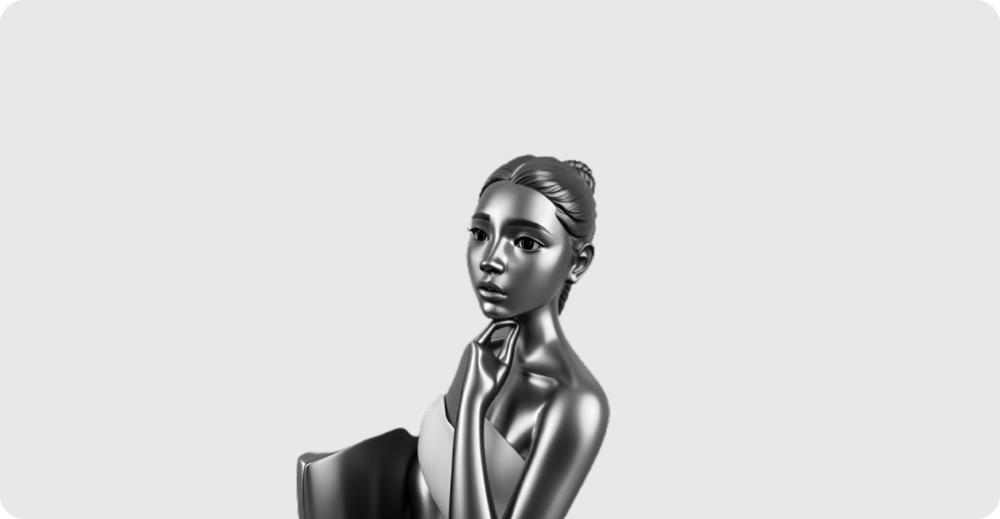
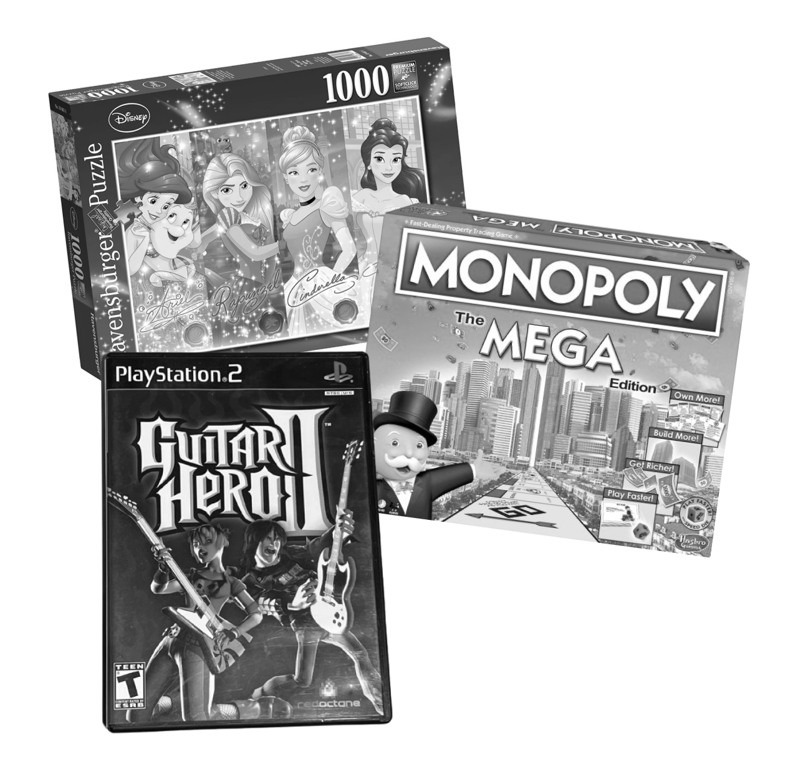
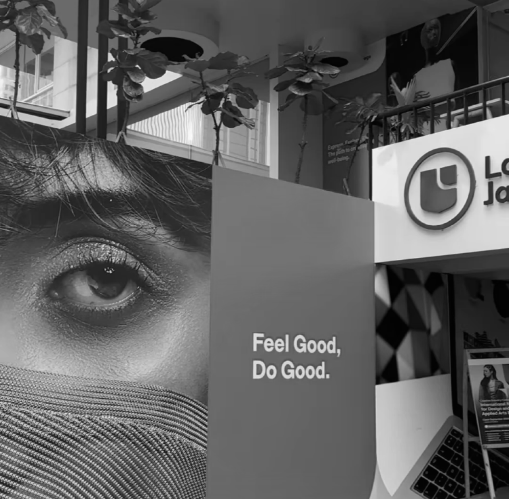
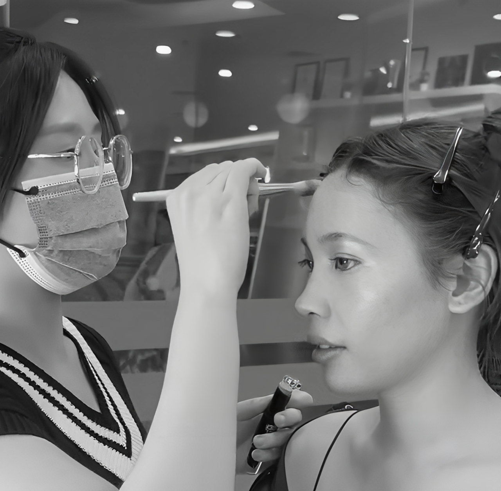
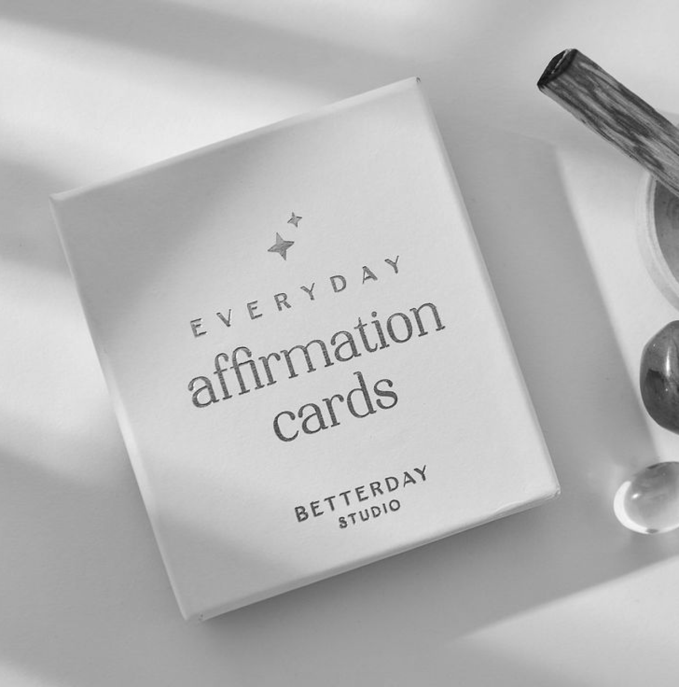
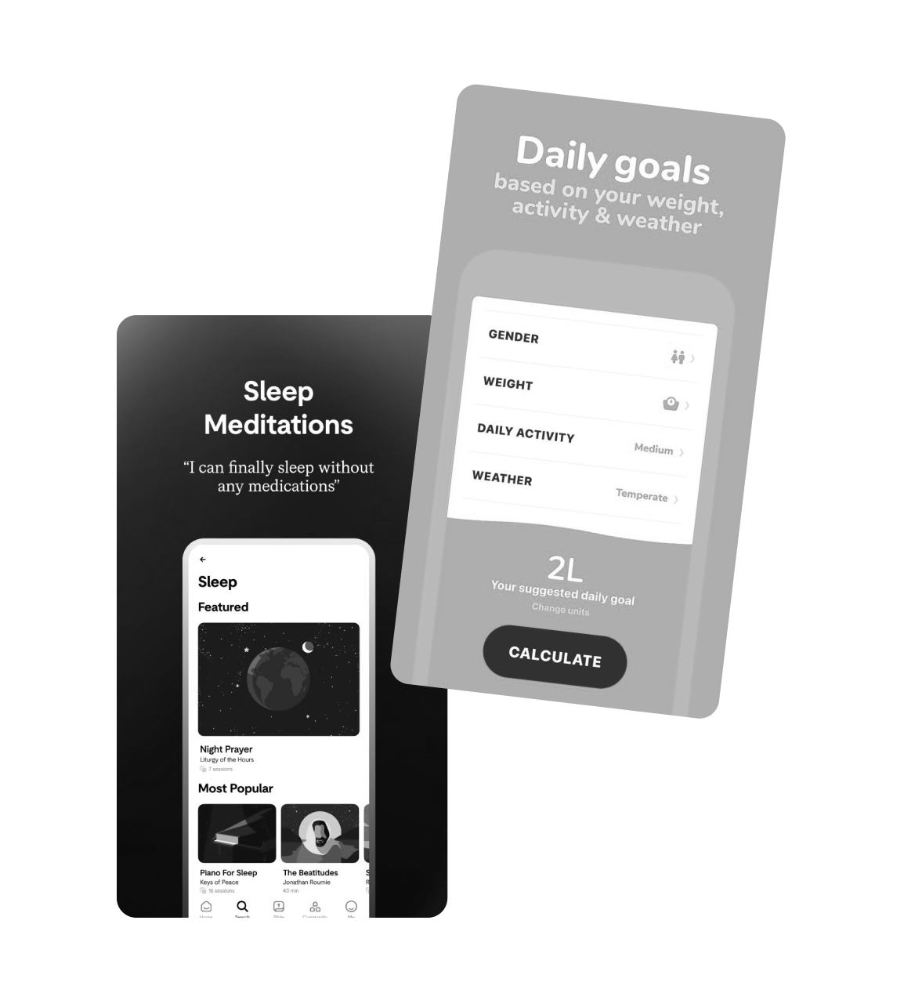

Hi there, my name is Maria Lydia Floren.
Let me tell you a little about me!
(p.s. appreciation shoutout for my friend Gree who created this art)
Ever since I was a kid, I enjoyed myself playing mental stimulating games. I fell in love with idea of solving problems from puzzles, monopoly, as well as my coordination when playing Playstation 2.

As I get older, during my college I decided to switch gears. I went to my first step of career in a graphic design and marketing field. I'm also an active freelance model in the city until now.
From there, I learned about humanity and how they perceive their surroundings, that most of the time first thing people would define anything or anyone is based on what type of visual representation is it showing.


Pandemic era was an opportunity for me to reflect on myself. I was into meditation and finding my purpose. I kept asking if I really want something else in my life, while also explored niche that suits me in career aspect. Graphic design is cool but I felt like I need more structure.

And then I found that I was so drawn to how people would create nice apps (they are literally so creative!), what are the process behind it.
At first I thought it was just something that I have interest upon short-term, but then I realize that I kept switching and trying apps all over everyday.
What if I'm curious? What if it's something I would really into?

Copyright © Lydia